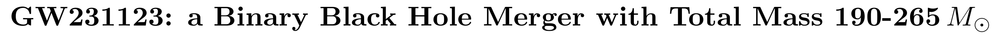
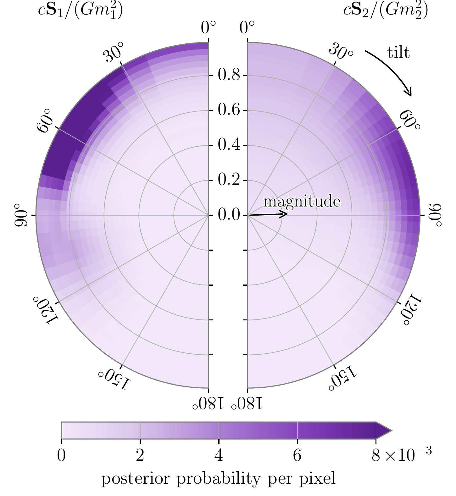

Good and bad ways to use AI for physics
Mark Ho-Yeuk Cheung
3 November 2026
Niels Bohr Institute
use <- and -> keys to navigate
Good and bad ways to use AI
- Making science “closed”
- Stop collaborating with one another
- Hiding ideas from each other
- Making science “open”

- Sharing the thought process with each other
- Making everything reproducible
- Making code, data, and ideas public
Good and bad ways to use AI
- Publishing more and more, but understanding less and less
- Write papers with LLMs without understanding what is going on
- Use AI to facilitate understanding of the physics
- Interactive visualizations
- Make pedagogical presentation slides
Example: precessing binary black holes
Face on vs edge on
$x$
$y$
$z$
O'Shaughnessy+ (1209.3712)
Miller+ (2505.14573)


LVK (2507.08219)